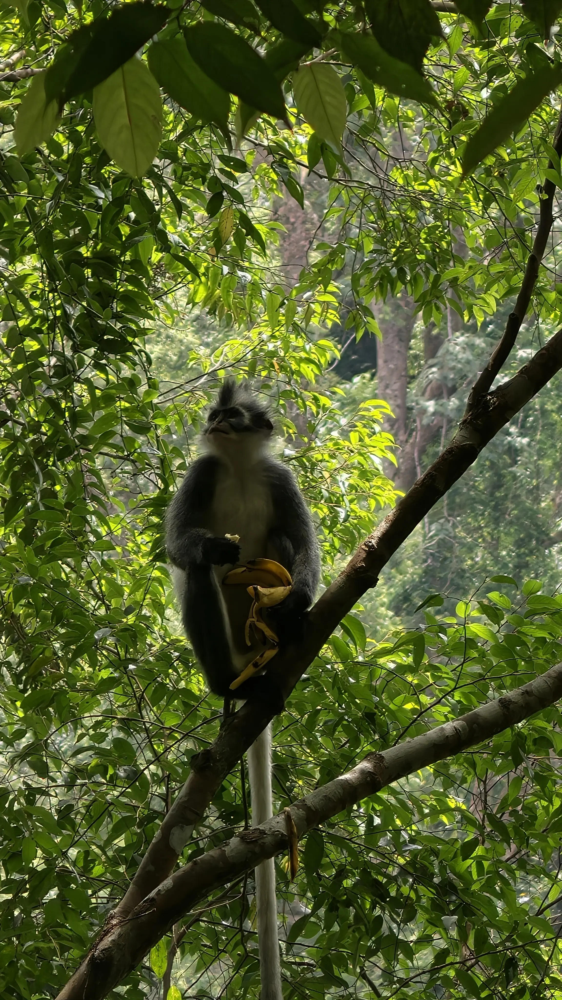

2-Day Jungle Trek
A full jungle adventure with a night under the stars

With two days in the jungle, you get real time to slow down and explore beyond the trails closest to town. You'll trek deeper into the rainforest with Jos, spotting macaques, Thomas leaf monkeys, and — with some luck — orangutans along the way. Both days include a fresh jungle lunch and fruit snacks, and on the first night you'll enjoy a cooked dinner before settling into a simple jungle hut with a mosquito net for the night. Falling asleep to the sounds of the rainforest is an experience in itself. On the second day, after more trekking, you'll make your way back to town the fun way — floating down the river on an inner tube. A great choice for travelers who want more than a day trip, without a huge time commitment.
How to book this tourItinerary
A rough outline of the day — actual timing may vary depending on wildlife sightings and group pace
-
Day 1 - 9:00 AM
Briefing & Start
Jos will pick you up directly at your hotel. Make sure you prepared all your gear and are ready to go.
-
Day 1 - 9:30 AM
Trekking begins
After all participants are gathered, you will enter the forest and make your way to the entrance of Gunung Leuser National Park.
-
Day 1 - 11:00 AM
Fruit Snack
First quick break to enjoy the sounds of the jungle and a mix of tropical fruits.
-
Day 1 - 1:00 PM
Jungle Lunch
Have lunch at a scenic spot in the jungle with some local dishes.
-
Day 1 - 4:00 PM
Arrive at the Jungle Hut
Go swimming in the nearby river and enjoy the peaceful atmosphere with freshly brewed coffee and tea. You can also refill your water bottle here.
-
Day 1 - 7:00 PM
Dinner and Overnight in Jungle Hut
As the lunch was only a simple meal, the dinner will be a more substantial affair, served in the comfort of the camp. You will sleep in a simple jungle hut protected by mosquito nets.
- Day 2
-
Day 2 - 8:30 AM
Breakfast at the camp
Start your day relaxed with nice company and a hearty breakfast as well as tea or coffee. Fill up your water bottle and prepare for the second day.
-
Day 2 - 9:00 AM
Deeper into the jungle
Start the second day of trekking will take you to quieter and deeper parts of the forest, with a similar itinerary as day 1 - with lunch and a fruit snack along the way.
-
Day 2 - 4:00 AM
Arrive at the riverside camp
After a few hours of hiking you will arrive at the camp at the riverside where the tubes are already waiting for you. You'll finish by floating back to town down the river on an inner tube.
-
Day 2 - 5:00 PM
Tour Ends
Tour ends at the riverside in the town. Jos will accompany you to the drop-off point at your hotel.
What's Included
- Local guide (Jos or a team member)
- Jungle trekking as per itinerary
- 2x jungle lunch
- Fruit snacks
- 1x cooked dinner
- 1x overnight stay in a jungle hut with mosquito net
- River tubing return to town
- PLACEHOLDER: any other inclusions specific to this tour
Looking for the full packing list and fitness requirements? Check our Equipment & What to Bring guide.